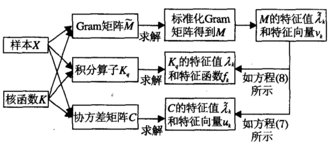

谱聚类广义模型与典型算法
本文为《谱聚类广义模型与典型算法分析》（《模式识别与人工智能》2014年11月第27卷第11期）的文献阅读笔记。
谱聚类方法基于点对相似性度量，避免了原型方法的数据凸分布要求，但当图规模较大时，求解特征向量较为困难。此外，谱聚类通过Laplace算子构造数据的非线性低维嵌入，形成可聚类的区域，然而全局的相似性度量易忽略局部差异和多尺度性，在NJW算法、Ncut算法的分割结果中常造成一些局部区域不能分辨的现象，虽然有一些基于局部度量的谱聚类算法，但是他们并没有经过严格的数学论证。
谱聚类方法使用核函数（可进行非线性映射）计算样本点之间的Gram矩阵（即度量矩阵，将样本从数据空间映射到度量空间中），然后对Gram矩阵进行Laplacian变换（为什么是拉普拉斯变化)，计算标准化Laplace矩阵L的特征值和特征向量（为什么要这么做）。将索引的特征值降序排列，前若干个最大特征值对应的特征向量构成数据的低维空间，数据在这些特征向量上的投影构成低维嵌入，如下图所示。

1.1 谱聚类与核k-means之间的关系
k-means的极小化问题可转化为迹最大化问题，核k-means的松弛问题的解可通过核PCA的特征值得到，而通过求解前K个特征值在进行聚类即为谱聚类过程。具体推演过程见Kernel K-means and Spectral Clustering。
1.2 谱聚类与权重核k-means
Dhillon为每个数据点分配一个适当的权重，提出一种权重核k-means算法，并证明其与谱聚类算法的等价性，详见Weighted Graph Cuts without Eigenvectors。
2. 谱聚类与核PCA
Bengio证明了谱聚类与核PCA的等价性，二者都是特征函数学习问题的特例。相似矩阵、谱聚类、积分算子、核PCA的特征值、特征向量之间的关系如下图所示。

3. 谱聚类与Laplacian特征映射
4. 谱聚类与判别分析
5. 分析与讨论
分析谱聚类与其他方法的联系有助于理解谱聚类的实际物理意义，为问题和模型的转化、计算复杂性的降低带来明显益处,同时为其他模型的改进提供思路和方法。具体表现如下：
1) 在保持非线性低秩结构发现能力的条件下，降低谱聚类在复杂问题求解中的复杂度，如将谱聚类转化为最大迹问题，避免矩阵求逆等运算。
2) 通过核PCA求解和表示谱聚类的特征向量可简化许多复杂计算过程。
3) 将谱聚类的低秩结构发现能力引入非线性判别分析等模型中，可改善模式识别的能力。 总之，从应用的角度出发，建立模型之间的内在联系的主要目的是为充分利用谱聚类的低秩结构发现能力，同时将复杂计算过程简化，以便有效地解决海量、复杂数据分析问题。
6. 典型算法分析
NJW算法
核函数->相似度矩阵->Laplace矩阵->特征向量和特征值
算法复杂度为O(n^3)，不适合处理海量数据集，但在一些小规模非凸分布数据集上有较好效果。
Ncut
求解过程与NJW算法相似，计算复杂性为O(n^2)。多次运行Ncut算法，随机出现不同的聚类结果，也就是说其聚类的稳定性不好，或对某些参数值敏感。
基于Nystrom方法的谱聚集
计算复杂度为O(r^3+rn)，其中，r为样本数，n为数据量，通过少量样本的插值近似计算原始矩阵的特征向量，大幅降低计算复杂性。
多尺度谱聚类算法
融入分层和抽样技术的谱聚类算法
深入阅读
- Dhillon I. S., Weighted Graph Cuts without Eigenvectors: A Multilevel Approach
- Von Luxburg U, Consistency of Spectral Clustering
- Rosasco L, On Learning with Integral Operators
- Welling M, Kernel K-means and Spectral Clustering
- Bengio Y, Spectral Clustering and Kernel PCA are Learning Eigenfunctions
- Zelnik-Manor L, Self-Tuning Spectral Clustering